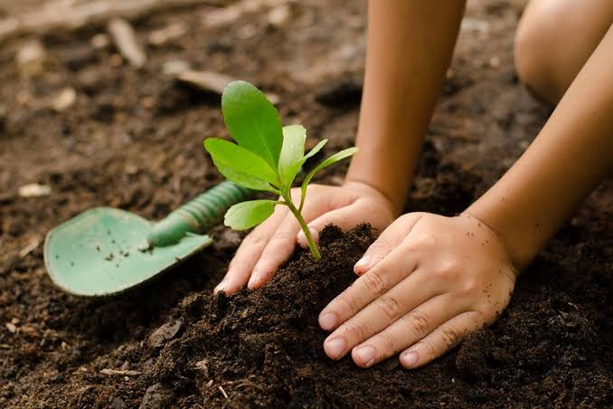

LEBIH DEKAT DENGAN KAMI
Berkenalan dengan Ruang Hijau.
Tempat warga belajar, berbagi, dan bergerak bersama untuk lingkungan yang lebih sehat.

PROFIL KOMUNITAS
Berawal dari kepedulian warga
Ruang Hijau berdiri pada tahun 2026 di lingkungan perumahan yang ingin memiliki ruang bersama yang lebih bersih dan nyaman. Kegiatan pertama kami adalah kerja bakti dan menanam tanaman di lahan kosong.
Saat ini, kegiatan komunitas terbuka untuk warga, pelajar, dan siapa pun yang ingin belajar menjaga lingkungan. Tidak perlu punya pengalaman khusus—cukup kemauan untuk ikut berkontribusi.
Visi kami
Mewujudkan lingkungan yang bersih, hijau, dan memiliki warga yang peduli satu sama lain.
AGENDA KOMUNITAS
Program rutin kami
Contoh agenda kegiatan Ruang Hijau
| No. | Nama kegiatan | Jadwal | Peserta | Tujuan |
|---|---|---|---|---|
| 01 | Kerja Bakti Lingkungan | Minggu, pekan ke-1 | Seluruh anggota | Menjaga kebersihan area bersama |
| 02 | Tanam dan Rawat | Minggu, pekan ke-2 | Tim kebun | Menambah ruang hijau |
| 03 | Bank Sampah | Sabtu, pekan ke-3 | Warga sekitar | Mendorong pemilahan sampah |
| 04 | Kelas Lingkungan | Minggu, pekan ke-4 | Umum | Berbagi pengetahuan praktis |
TERBUKA UNTUK SEMUA
Mau ikut bergabung?
Datang ke salah satu kegiatan rutin kami atau ajak tetangga untuk ikut. Setiap bantuan, sekecil apa pun, berarti untuk lingkungan.
Informasi komunitas
Lokasi: Bekasi
Waktu kegiatan: Akhir pekan
Email: contoh@ruanghijau.com
Kembali ke beranda